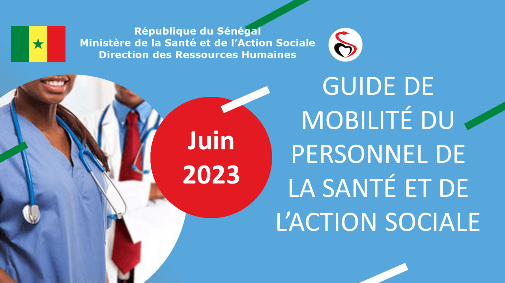

Contribution
Structuration des données, production d’indicateurs et appui technique à la rédaction de documents cadres nationaux. Cette contribution associe connaissance du système de santé, qualité des données et production documentaire institutionnelle.
Livrables
Des références pour planifier
Plan Directeur du Système d’Information Sanitaire, Guide de mobilité du personnel, Cartographie des métiers, Annuaire statistique des ressources humaines et Rapport sur les Comptes Nationaux des Personnels de Santé.
La collaboration avec l’OMS correspond à des ateliers avec ses représentants au Sénégal dans le cadre des CNPS, et non à une mission contractuelle directe.
Aperçu

